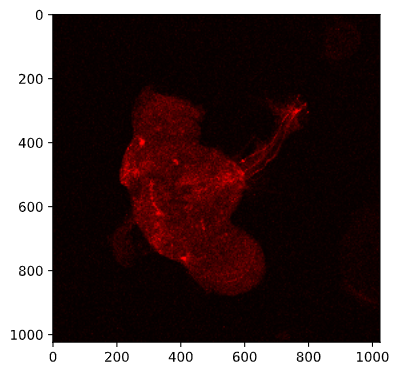
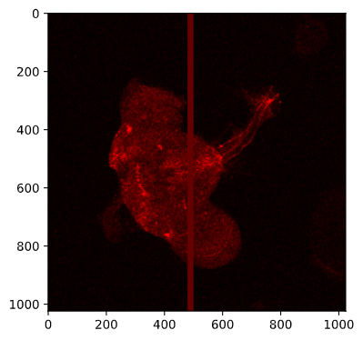
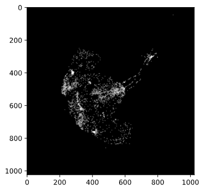
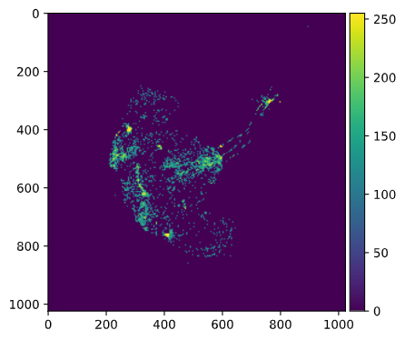

The first and last of these exercises are more short tutorials working through two of the examples in the book.
The first two exercises use BioPython, the third uses Pandas, and the last uses NumPy. As we’re getting into more advanced and specialized material, you may be much more interested in some approaches/packages than others, and it is fine if you direct your attention accordingly.
For example, if you are interested in one of these three but not so much the other two, feel free to skip the other exercises. And if you have time to spare, I would rather recommend digging a bit deeper into your topic of interest:
For more BioPython, see this BioPython workshop (and for much more, the BioPython tutorial).
For more NumPy, see the official NumPy tutorial.
For more Pandas, see this overview of tutorials.
Using the Entrez.esearch() function we used in class, we can search any NCBI database, including PubMed, which is a comprehensive scientific literature database.
By way of example, we will search for any papers on Drosophila that mention the gene “spaetzle” anywhere in the title or abstract.1
As always, we start by importing the Entrez module and providing our email address:
from Bio import Entrez
Entrez.email = "me.999@osu.edu" # Replace with your actual email address!Now, we can run the search. We will match “spaetzle” only in the title or abstract, and we will match Drosophila anywhere ([ALL]):
handle = Entrez.esearch(db = "pubmed",
term = ("spaetzle[Title/Abstract] AND Drosophila[ALL]"),
usehistory = "y")
record = Entrez.read(handle)
handle.close() Note that these search keywords are NCBI’s. For a list of all of them go NCBI’s PubMed help page and search for “Search Field descriptions and tags”.
We used usehistory = "y", which will allows us to refer back to our search to fetch the titles and abstracts by saving WebEnv and QueryKey:
webenv = record["WebEnv"]
query_key = record["QueryKey"]How many hits did we get?
record["Count"]
#> '15'We found 15 records (up from 13 in the book) that contained the words “spaetzle” and “Drosophila”.
We can now fetch the titles and abstracts:
handle = Entrez.efetch(db = "pubmed",
rettype = "medline", retmode = "text",
webenv = webenv, query_key = query_key)
data = handle.read()
handle.close() Finally, we write the results to file:
out_handle = open("Spaetzle_abstracts.txt", "w")
out_handle.write(data)
out_handle.close()Let’s have a look at the results – here, I am using ! to execite shell commands from within Python (alternatively, you can open a shell):
!cat Spaetzle_abstracts.txt
#> [Output not shown.]With a simple grep command, we can select just those lines that contain the word “Spaetzle”. We’ll use -C 1 to also see 1 line before and 1 lines after each match, to get a bit more context:
!grep -i "spaetzle" -C 1 Spaetzle_abstracts.txt
#> leading to ventrally-restricted expression of the sulfotransferase Pipe. These
#> events promote the ventral processing of Spaetzle, a ligand for Toll, which
#> ultimately sets up the embryonic dorsal-ventral axis. We then describe the
#> --
#> DP - 2019 Nov 12
#> TI - Dynamics of Spaetzle morphogen shuttling in the Drosophila embryo shapes
#> gastrulation patterning.
#> --
#> The dynamics indicate that a sharp extracellular gradient is formed through
#> diffusion-based shuttling of the Spaetzle (Spz) morphogen that progresses through
#> several nuclear divisions. Perturbed shuttling in wntD mutant embryos results in
#> [And so on, first three matches shown.]Alternatively, we could use regular expressions in Python to nicely retrieve each sentence (rather than each line) that contains “Spaetzle”, and also print the PubMedID (“PMID”) for the publication. You will learn how to use regular expressions like this in Python next week!
import re # re is Python'r regular expression module
with open("Spaetzle_abstracts.txt") as datafile:
pubmed_input = datafile.read()
# To get titles and abstracts on one line: delete newlines + 6 spaces:
pubmed_input = re.sub(r"\n\s{6}", " ", pubmed_input)
for line in pubmed_input.split("\n"):
# re.match()'s output will be interpreted as True only if a match is found:
# (Here we just use a literal search from "PMID")
if re.match("PMID", line):
# We find and extract the PubMed ID by matching one or more digits;
# group() will return the match:
PMID = re.search(r"\d+", line).group()
if re.match("AB", line):
# We look for *all* sententces that contain "Spaetzle" using findall():
if re.findall(r"([^.]*?Spaetzle[^.]*\.)", line):
print("PubMedID: ", PMID, " ", spaetzle)
#> PubMedID: 32591083 [' These events promote the ventral processing of Spaetzle, a ligand for Toll, which ultimately sets up the embryonic dorsal-ventral axis.']
#> PubMedID: 31719046 [' The dynamics indicate that a sharp extracellular gradient is formed through diffusion-based shuttling of the Spaetzle (Spz) morphogen that progresses through several nuclear divisions.']
#> PubMedID: 27314646 [' While cytokines activating immune responses, such as Spaetzle or Unpaired-3, have been identified and(You will need to have run through the previous tutorial exercise to be able to do this one.)
Suppose you need information on how to breed Drosophila virilis in your laboratory and you would like to contact an expert. Conduct a PubMed query on who has published most contributions on D. virilis. This person might be a good researcher to contact.
Use the Entrez.esearch() function and search the “pubmed” database, and then save the results from the search handle in an object called record.
Include usehistory=y in your Entrez.esearch() call, and then assign the “WebEnv” and “QueryKey” to variables. If you saved you results in the variable record, you could get these using record["WebEnv"] and record["QueryKey"], respectively. Then, you can refer to this search in the next step.
Use [Title/Abstract] after the search term to search only in the title and abstract.
Pseudocode:
import the Entrez module
Entrez.email = "your email here"
# Create a handle:
handle = Entrez.esearch(your code here)
# Retrieve the records
record = Entrez.read(handle)
close the handle
save WebEnv from your record
save QueryKey from your records# Import the Entrez module:
from Bio import Entrez
# Tell NCBI who you are:
Entrez.email = "me.1@osu.edu" # EDIT TO YOUR ADDRESS
# Perform the search:
handle = Entrez.esearch(db = "pubmed",
term = "Drosophila virilis[Title/Abstract]",
usehistory = "y")
# Save the results from the search handle in "record" and close the handle:
record = Entrez.read(handle)
handle.close()
# Print the number of matching papers:
print(record["Count"])
# Save the WebEnv and QueryKey for later use:
webenv = record["WebEnv"]
query_key = record["QueryKey"]For the similar CSB solutions to all steps in this exercise, see here.
D_virilis_pubs.txt.Use the Entrez.efetch() function to retrieve the records. Use similar options to those we used in class, but set retmax to be at least as high as the number of papers that you found in the previous step, or you will not get all papers.
Read the results from your search handle to an object, and then write your object to the file D_virilis_pubs.txt.
Pseudocode:
handle = fetch records from "pubmed" db with "medline" rettype, "text" retmode,
600 retmax, and the saved webenv and query_key
data = read from handle
close the handle
with open output file as handle
write the data# Perform the search:
shandle = Entrez.efetch(db = "pubmed",
rettype = "medline",
retmode = "text",
retstart = 0, retmax = 600,
webenv = webenv, query_key = query_key)
# Save results from the search handle in "data" and close the handle:
data = shandle.read()
shandle.close(
with open("D_virilis_pubs.txt", "w") as fhandle:
fhandle.write(data)Count the number of contributions per author.
Start by taking a look at your D_virilis_pubs.txt file to see how you can match lines that contain author names.
Create an empty dictionary for authors and their publication counts, and then loop through each line in D_virilis_pubs.txt to fill in the dictionary.
To find lines with authors, use the find() methods and search for AU or even better AU -, since these are the lines with authors.
You’ll want to only process lines for which you found AU - as above. Because find() returns -1 when nothing if found, use an if statement to test what the output of find() is.
Pseudocode:
with open D_virilis_pubs.txt
initialize empty dict
for line in fhandle
if line contains "AU -"
split the line by "-" and take the 2nd element
strip whitespace
initialize author if not in dict and add 1 to keep countwith open("D_virilis_pubs.txt") as fhandle:
# Initialize an empty dictionary:
author_dict = {}
# Loop through each line:
for line in fhandle:
# Search for lines with "AU -", which contain authors:
if line.find("AU -") != -1:
# The author name is after the "-",
# so we split by "-" and take the 2nd element:
author = line.split("-", 1)[1]
# Then, we remove any leading and trailing whitespace:
author = author.strip()
# If key (=author) is present, add 1, otherwise, initialize at 1:
author_dict[author] = author_dict.get(author, 0) + 1For the the five authors with the most papers on D. virilis, print each name and the corresponding number of papers.
You’ll have to use the sorted() in a way we have not seen yet, see the Hints below for more details.
To get the top authors, you can use the sorted() function on your dictionary. You’ll have two provide two additional arguments:
key = author_dict.get, which will sort by the values of the dictionary.
reverse = TRUE, so you get the highest number of papers first.
Then, take the first 5 items in the resulting list, which will be the top 5 authors.
Finally, loop through your list of top authors and print their names (keys) and number of papers (values).
Pseudocode:
sorted_authors = sort dict by value in reverse order
top_authors = take top 5 from sorted_authors
for author in top authors
print the name and the number of paperssorted_authors = sorted(author_dict, key = author_dict.get, reverse = True)
top_authors = sorted_authors[:5]
for author in top_authors:
print(author, ":", author_dict[author])
#> Gruntenko NE : 36
#> Evgen'ev MB : 31
#> Hoikkala A : 24
#> Raushenbakh IIu : 24
#> Korochkin LI : 22Fox et al. (2016) studied the effects on the outcome of papers of the genders of the handling editors and reviewers. For the study, they compiled a database including all the submissions to the journal Functional Ecology from 2004 to 2014. Their data are reported in CSB/scientific/data/Fox2015_data.csv.2
Besides the effects of gender and bias in journals, the data can be used to investigate whether manuscripts having more reviewers are more likely to be rejected. Note that this hypothesis should be tested for reviewed manuscripts, that is, excluding “desk rejections” without review.
Import the data using Pandas, and count the number of reviewers (by summing ReviewerAgreed) for each manuscript (i.e., unique MsID). The column FinalDecision contains 1 for rejection, and 0 for acceptance.
Compile a table measuring the probability of rejection given the number of reviewers. Does the probability of being rejected seem to increase with the number of reviewers?
With an eye on the next step, where you have to do the same thing for each year, it is convenient to write a function that takes the data and a calendar year as input, and prints the probability of rejection given the number of reviewers for that given year.
We can set the function to return the general rejection rate if “all” instead of a year is specified as an argument.
Pseudocode:
import pandas
import numpy as np
# read the data using pandas
# (assuming you are in 'CSB/scientific/sandbox')
fox = pandas.read_csv("../data/Fox2015_data.csv")
use a combination of list and set() to extract the unique `MsID`
now go through each manuscript and store:
i) the final decision (reject/accept) in the np.array final_decision
ii) the number of reviewers in the np.array num_reviewers
iii) the submission year in the np.array year
def get_prob_rejection(my_year = "all"):
if my_year == "all":
do not subset the data
else:
subset the data to use only the specified year
for each number of reviewers:
compute probability of rejection and produce outputWrite a function to repeat the analysis above for each year represented in the database.
For example, for the year 2009, your function should return:
Year: 2009
Submissions: 626
Overall rejection rate: 0.827
NumRev NumMs rejection rate
0 306 0.977
1 2 0.5
2 228 0.68
3 86 0.698
4 4 0.75If your function doesn’t already take a calendar year as as an argument, modify your function to do so.
Then loop through the years of 2004-2014 (inclusive) and run your function for each year.
See the CSB notebook with the solutions.
The notebooks sometimes don’t manage to load on GitHub; if not, try refreshing and otherwise go here and look at the PDF version instead.
Note: The solution uses some “plain Python” approaches where specialized Pandas functions are also available to do the same thing more succinctly. That is fine, and makes sense given that we have only had a quick introduction to Pandas and did not learn about these more advanced functions — but it may be good to be aware of this.
If you want to try out specialized Pandas approaches for this exercise, look into the groupby method in particular.
To get started, you will need to install scikit-image into your interactive Python Conda environment, which you can do as follows:
sinteractive -A PAS1855 -t 60 # Start an interactive job
module load python/3.6-conda5.2 # Load the OSC Conda module
source activate ipy-env # Activate your existing Conda environment
conda install -y scikit-image # Install scikit-imageWe start by loading NumPy and Scikit-image:
import numpy as np
import skimage.io as ioNext, let’s save the path to the image we want to read in as a variable:
import os
# Change "<user>" by your username:
# (and adjust the path otherwise if necessary)
CSB_dir = '/fs/ess/PAS1855/users/<user>/CSB/scientific/data'
image_file = 'Kacsoh2013_Drosobrain.png'
image_path = os.path.join(CSB_dir, image_file)Plotting works out of the Box in the VS Code interactive window.
If you’re using a Jupyter Notebook, you would also need to make Matplotlib image plotting available using the following IPython “magic function”:
%matplotlib inlineLet’s view the image:
image = io.imread(image_path)
io.imshow(image)

In what format is our image stored?
type(image)
#> numpy.ndarrayAs a NumPy array!
Therefore, we can use the NumPy methods we have learned about. Let’s check the dimensions:
image.shape
#> (1024, 1024, 4)The image is 1024 x 1024 pixels, with 4 the four RGBA channels along the 3rd dimension:
The first channel is the red channel, which should be the one of interest, given what our image looks like… Let’s extract it and explore a bit:
red = image[:, :, 0] # All rows, all columns, red channel
print(red.mean())
#> 23.181024551391602
print(red.std())
#> 30.446740821993011
print(red.min(), red.max())
#> 0 255It looks like we indeed only have variation in the red channel:
# Loop over the channel indices in the 3rd dimension: image.shape[3]
for channel_index in range(0, image.shape[2]):
# Compute the standard deviation in the 3rd dimension:
print(image[:, :, channel_index].std())
#> 30.44674082199301
#> 0.0
#> 0.0
#> 0.0Say that we are interested in examining what area in the image express the NPF and NPFR1 genes that were targeted by this assay.
We’ll here take an overly simple approach, by setting a threshold of 100 and determining which pixels have a higher value than that.
Let’s check what a value of 100 looks like by modifying a copy of the image:
img_copy = image.copy()
img_copy[:, 480:500, 0] = 100 # This should create a thick vertical red line
io.imshow(img_copy)

Next, we’ll “mask” our array: with a conditional expression, we produce a Boolean (False/True) array and then multiply that by 1 to get 0 (for False) for pixels that do not pass the threshold and 1 (for True) for pixels that do pass the threshold.
threshold = 100
mask = (red > threshold) * 1 # Recall: "red" is the 2d-array for the red channelHow many pixels passed this mask (filter)?
mask.sum()
#> 37037Plot the mask:
io.imshow(mask)

Finally, we’ll use a little trick to get the actual pixel values back for those pixels that passed the threshold – we multiply the original array by the 0/1 mask:
mask2 = red * mask
io.imshow(mask2)

Text and figures are licensed under Creative Commons Attribution CC BY 4.0. The figures that have been reused from other sources don't fall under this license and can be recognized by a note in their caption: "Figure from ...".